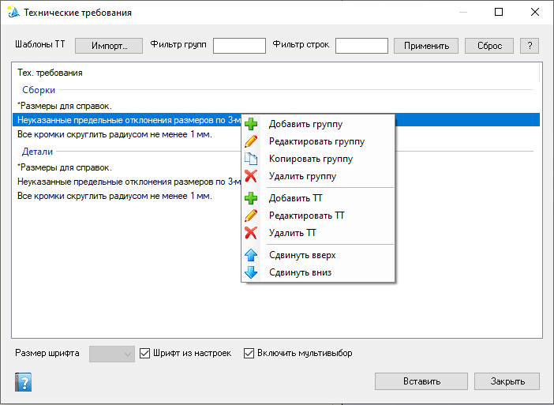

Технические требования
Библиотека шаблонов технических требований (группы и строки) и вставка выбранных пунктов в активный чертёж SOLIDWORKS. Доступно и администратору, и пользователю. Агент не нужен.
Как открыть
Лента Velum → Тех. требования. Активный документ должен быть чертежом.

Окно ТТ: импорт шаблонов, фильтры групп/строк, дерево требований, настройки шрифта и мультивыбора; контекстное меню для групп и строк; Вставить / Закрыть.
Элементы окна
| Элемент | Назначение |
|---|---|
| Импорт… | Загрузить шаблоны ТТ из файла в библиотеку Velum. |
| Фильтр групп / Фильтр строк | Отбор дерева по имени группы и тексту строки (маски — как в других формах). |
| Применить / Сброс / ? | Применить или очистить фильтры; «?» — справка по маскам. |
| Область «Тех. требования» | Дерево/список групп и строк шаблона. ПКМ открывает контекстное меню. |
| Размер шрифта | Кегль текста на чертеже (доступен, если снят флажок «Шрифт из настроек»). |
| Шрифт из настроек | Брать параметры шрифта из настроек SOLIDWORKS / документа, а не из поля размера. |
| Включить мультивыбор | Выделять несколько строк ТТ для одной вставки. |
| Вставить | Записать выбранные пункты на активный чертёж. |
| Закрыть | Закрыть окно. |
Контекстное меню
- Добавить / Редактировать / Копировать / Удалить группу — управление разделами шаблона.
- Добавить / Редактировать / Удалить ТТ — строки формулировок внутри группы.
- Сдвинуть вверх / вниз — изменить порядок (также Ctrl+↑/↓, PgUp/PgDn).
- Фильтр по выделенному / Исключить выделенное — по тексту строки ТТ в «Фильтр строк» (см. маски).
Диалог ввода текста поддерживает спецсимволы SOLIDWORKS (диаметр, градус, катет сварки, квадрат, развёртка, плюс/минус) через контекстное меню поля.
Данные
Библиотека хранится в %ProgramData%\VELUM\TechRequirements (путь может быть переопределён в настройках проекта).